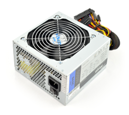

Zasilacz komputera (Power Supply)
Opis: Zasilacz komputera to komponent odpowiedzialny za dostarczanie energii elektrycznej do wszystkich części komputera. Jego główną funkcją jest przekształcanie prądu z gniazdka (AC) na prąd stały (DC), który może być używany przez podzespoły. Najważniejsze cechy zasilacza to jego moc wyrażona w watach (np. 500W, 750W), sprawność (certyfikaty 80 PLUS) oraz jakość wykonania. Ma ogromny wpływ na stabilność działania całego komputera – słaby zasilacz może powodować restarty lub uszkodzenia sprzętu. Przykładowe modele to Corsair RM750x, be quiet! Pure Power 12 czy Seasonic Focus GX.
